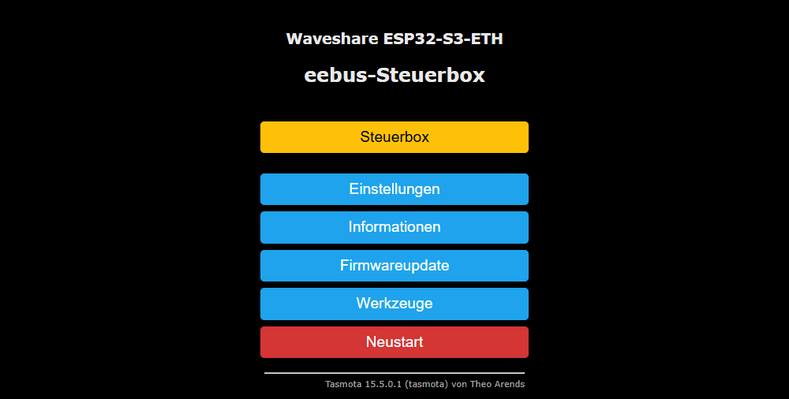
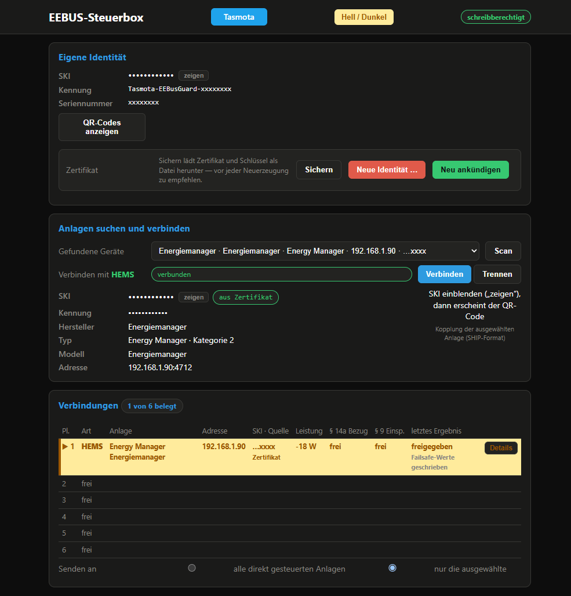
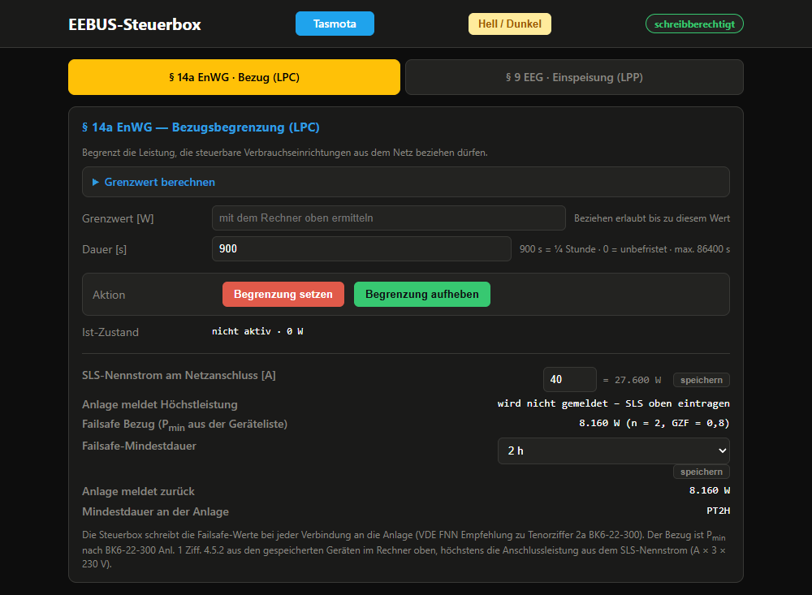
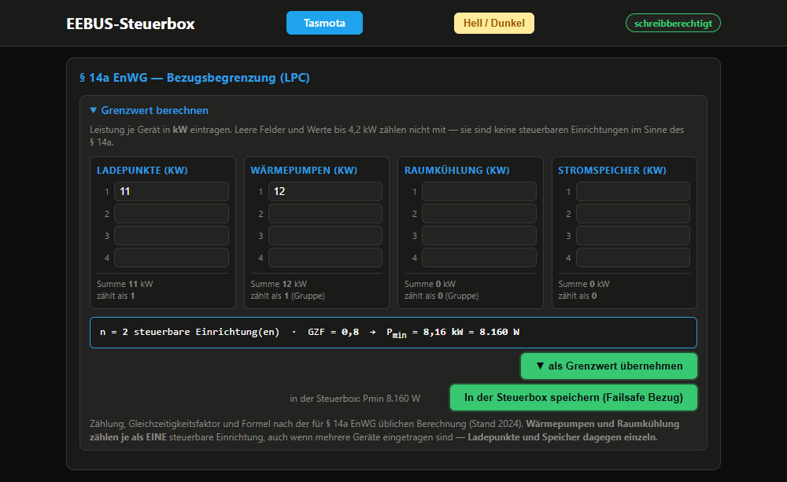
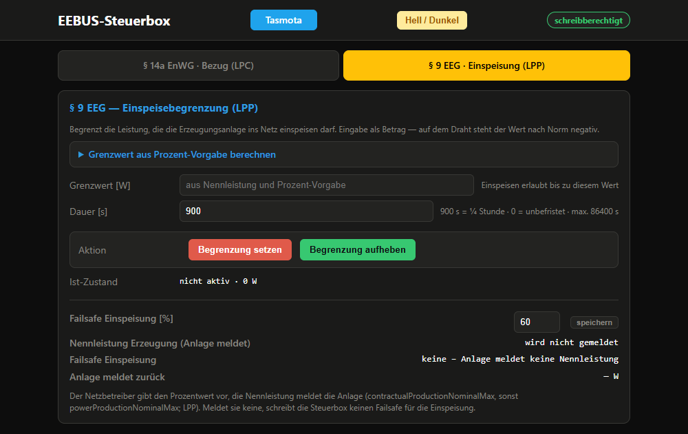

Bedienungsanleitung · Stand 26.10.2026 · Treiber xdrv_126 v216 · Persönliche Daten in den Bildern unkenntlich gemacht Erstellt von meierchen006 mit Hilfe von Claude
Testgerät, nicht zertifiziert. Die Steuerbox dient dazu, die EEBUS-Kommunikation mit einem HEMS (Energiemanagementsystem im Haus) oder mit steuerbaren Verbrauchseinrichtungen zu prüfen. Sie ersetzt weder die Steuerbox des Messstellenbetreibers noch ein geprüftes Gerät nach § 14a EnWG und ist nicht für den regulären Betrieb gedacht.
1. Was die Steuerbox macht
Die Steuerbox spielt die Rolle, die sonst die Steuerbox des Netzbetreibers am Smart-Meter-Gateway übernimmt. Sie schickt per EEBUS zwei Arten von Vorgaben:
§ 14a EnWG – Bezugsbegrenzung (LPC): wie viel Leistung steuerbare Verbrauchseinrichtungen (Wärmepumpe, Wallbox, Speicher, Klimagerät) höchstens aus dem Netz beziehen dürfen. Grundlage: § 14a Abs. 1 EnWG mit BNetzA-Festlegung BK6-22-300.
§ 9 EEG – Einspeisebegrenzung (LPP): wie viel die Erzeugungsanlage höchstens einspeisen darf.
Für jede steuerbare Verbrauchseinrichtung entscheidet der Betreiber, wie sie angesteuert wird (BK6-22-300 Anlage 1 Ziff. 4.4):
über ein HEMS (Ziff. 4.4 b) – die Steuerbox schickt dem HEMS einen Gesamtwert, das HEMS verteilt ihn auf seine Geräte, oder
direkt (Ziff. 4.4 a) – die Steuerbox spricht das Gerät selbst an, zum Beispiel ein Wärmepumpen-Gateway oder die SteuVE (steuerbare Verbrauchseinrichtung auf Tasmota, eigene Anleitung).
Ein Gerät ist entweder direkt oder über ein HEMS angebunden, nie beides. Die Box kann aber gleichzeitig mit einem HEMS und mit mehreren direkt gesteuerten Geräten verbunden sein: bis zu 6 Verbindungen. Welche Art eine Verbindung ist, erkennt die Box am Gerätetyp der Gegenstelle (Energiemanager = HEMS, alles andere = direkt).
Die Gegenstelle wird immer über die SKI aus ihrem Zertifikat erkannt, nicht über ihre Adresse. Verbindungen laufen über IPv4 oder IPv6 und in beide Richtungen: Die Box ruft an, oder die Gegenstelle ruft die Box an.
2. Seite aufrufen
Auf der Tasmota-Hauptseite der Box auf „Steuerbox“ klicken. Die Seite liegt als Datei steuerbox.html im Dateisystem der Box (am besten auf der SD-Karte).

Bild 1 – Tasmota-Hauptseite mit dem Knopf „Steuerbox“.
Zeigt die Seite „steuerbox.html liegt nicht im Dateisystem – bitte hochladen“, fehlt die Datei. Sie gehört ins Dateisystem der Box.
3. Eigene Identität und Anlagen verbinden

Bild 2 – Eigene Identität, Anlagen suchen und verbinden (hier mit einem Energiemanager), Tabelle „Verbindungen“ mit der ausgewählten Anlage. Kennungen, SKIs, Adressen und QR-Codes unkenntlich gemacht.
Eigene Identität
SKI – der Fingerabdruck des eigenen Zertifikats. Verdeckt; „zeigen“ blendet ihn nur in diesem Browser ein. Diese SKI muss man beim HEMS bzw. Gerät als vertrauenswürdig eintragen.
Kennung / Seriennummer – werden aus der SKI abgeleitet. QR-Codes anzeigen – Kopplungsdaten der Box im SHIP-Format zum Abscannen.
Sichern – lädt Zertifikat und Schlüssel als Datei herunter. Vor jeder Neuerzeugung sichern.
Neue Identität … – erzeugt ein neues Zertifikat. Neu ankündigen – meldet die Box im Netz neu an (mDNS).
Neue Identität = neue SKI. Alle bestehenden Kopplungen verfallen; beim HEMS bzw. Gerät muss die neue SKI wieder als vertrauenswürdig eingetragen werden.
Anlagen suchen und verbinden
Scan klicken – die Box sucht per mDNS alle EEBUS-Geräte im Netz.
Unter „Gefundene Geräte“ das Gerät wählen. Immer nach Name bzw. SKI wählen – die Reihenfolge der Liste ändert sich bei jedem Scan. Darunter stehen SKI (mit „aus Zertifikat“, sobald verbunden), Hersteller, Typ, Modell und Adresse; rechts der QR-Code der ausgewählten Anlage.
Verbinden klicken. Der Knopf meldet, was passiert: „⏳ verbindet …“, dann „✓ verbunden“, „⏳ Gegenstelle wartet auf Freigabe“ (die Gegenstelle muss die Box erst als vertrauenswürdig annehmen, z. B. in ihrem Portal) oder „✗ …“ mit dem Fehler. Trennen meldet ebenso „✓ getrennt“.
Steht in der Tabelle „Verbindungen“ als letztes Ergebnis „BESTAETIGT freigegeben“, ist die Kopplung fertig.
Verbindungen
Die Tabelle zeigt alle 6 Plätze: Art (HEMS oder direkt), Anlage, Adresse, SKI mit Quelle (Zertifikat), Leistung, Zustand § 14a und § 9 und das letzte bestätigte Ergebnis; darunter klein, ob die Failsafe-Werte geschrieben sind. Die ausgewählte Anlage ist bernsteinfarben hervorgehoben (▶) – an sie gehen die Befehle, wenn unten „nur die ausgewählte“ eingestellt ist.
Senden an: „nur die ausgewählte“ oder „alle direkt gesteuerten Anlagen“. „Alle“ geht nie an ein HEMS – das bekommt seinen Gesamtwert immer einzeln.
Wiederaufbau nach einem Neustart: Jede Anlage, die einmal die Datenphase erreicht hat, merkt sich die Box (bis zu 6). Nach einem Neustart wartet sie, bis Netz und Uhrzeit stehen, dann 30 s, und verbindet sich mit allen gemerkten Anlagen wieder. Ruft eine Anlage vorher selbst an, wird sie übersprungen. Die Wartezeit lässt sich mit EEBusAutoConn <s> ändern und bleibt gespeichert. Trennen stoppt den Wiederaufbau bis zum nächsten Neustart, vergisst die Anlage aber nicht (dafür: EEBusAutoConn -1). Fehlt eine gemerkte Anlage im Netz (z. B. weil sie eine neue Identität hat), hält sie die anderen nicht auf: Gefundene Anlagen werden sofort verbunden. Eine einzelne Anlage nimmt EEBusAutoConn -<SKI> aus der Liste. Die Box kündigt sich im Netz mit IPv4 und IPv6 an, damit sie auch Geräte ohne IPv6 erreichen können.
Vorgabe nach jeder Wiederverbindung: Nach einer Wiederverbindung schickt die Box von selbst ihre letzte Grenze erneut oder eine Freigabe – bei direkt gesteuerten Geräten nach 5 s, bei einem HEMS nach 30 s. So hat die Anlage immer binnen 60 s wieder eine gültige Vorgabe (EEBUS-Use-Case LPC, Regel LPC-913).
Struktur & Messwerte
Für die ausgewählte Anlage: die Selbstauskunft der Gegenstelle (Actors, Use Cases, Entities, Features) und die Live-Werte des Netzanschlusspunkts (Leistung, Zählerstände, Ströme, Spannungen, Frequenz, Begrenzungsfaktor). Was die Gegenstelle nicht liefert, steht als „wird nicht geliefert“ da – das ist eine Eigenschaft der Anlage, kein Fehler der Box.
4. § 14a EnWG – Bezugsbegrenzung (LPC)

Bild 3 – Reiter „§ 14a EnWG · Bezug (LPC)“ mit Grenzwert, Dauer, Ist-Zustand und darunter den Failsafe-Einstellungen.
Grenzwert [W] eintragen – so viel dürfen die steuerbaren Verbrauchseinrichtungen zusammen noch beziehen. Hilfe dazu: „Grenzwert berechnen“ (Bild 4).
Dauer [s] – 900 s = ¼ Stunde, 0 = unbefristet, höchstens 86 400 s. Nach Ablauf hebt sich die Grenze von selbst auf.
Begrenzung setzen – schickt die Grenze. Begrenzung aufheben – gibt sofort frei.
Ist-Zustand zeigt, was die Gegenstelle meldet (aktiv/nicht aktiv, Wert, Restzeit).
Direkt gesteuerte Geräte werden immer genau auf ihre Mindestleistung gedimmt – 4.200 W, bei Wärmepumpe oder Klimaanlage mit mehr als 11 kW 0,4 × Leistung (BK6-22-300 Anlage 1 Ziff. 4.5.1). Ein anderer eingegebener Wert wird dabei ersetzt; im Log steht dann „direkt gesteuert: Dimmen fest auf 4200 W statt … W (BK6 Ziff. 4.5.1)“. Ein HEMS bekommt den Wert so, wie er eingegeben wird – es verteilt ihn selbst (Ziff. 4.5.2).
Ein HEMS übernimmt die Grenze meist nach einigen Sekunden und verteilt sie auf seine Geräte.

Bild 4 – Grenzwert-Rechner: Leistung je Gerät in kW eintragen; „als Grenzwert übernehmen“ setzt Pmin in das Feld Grenzwert, „In der Steuerbox speichern (Failsafe Bezug)“ speichert die Geräteliste für den Failsafe.
Der Rechner ermittelt den Mindest-Grenzwert Pmin für ein HEMS nach der Formel der Festlegung BK6-22-300 (Anlage 1 Ziff. 4.5.2): Werte bis 4,2 kW zählen nicht mit, Wärmepumpen und Raumkühlung zählen je als eine Einrichtung, Ladepunkte und Speicher einzeln; dazu der Gleichzeitigkeitsfaktor. Der Rechner sendet nichts – erst „Begrenzung setzen“ schickt den Wert.
Failsafe-Werte
Die Box überträgt bei jeder Verbindung die Failsafe-Werte an die Anlage (VDE-FNN-Empfehlung zu Tenorziffer 2a BK6-22-300, Kap. 4.1.2.5). Sie gelten, wenn die Verbindung zur Steuerbox abreißt:
Failsafe Bezug: bei einem HEMS Pmin der Anlage (aus der im Rechner gespeicherten Geräteliste, Ziff. 4.5.2), höchstens die Anschlussleistung aus dem SLS-Nennstrom (A × 3 × 230 V, unter dem Ist-Zustand eintragen und speichern) bzw. die Höchstleistung, die die Anlage selbst meldet; bei einem direkt gesteuerten Gerät seine Mindestleistung (4.200 W, Ziff. 4.5.1).
Failsafe Einspeisung: Prozent der Nennleistung Erzeugung, die die Anlage meldet (Reiter § 9). Nur für Anlagen mit Einspeisegrenze; meldet die Anlage keine Nennleistung, wird kein Wert geschrieben.
Failsafe-Mindestdauer: Auswahl 2 bis 24 h (Vorgabe 2 h), mit „speichern“ übernehmen.
„Anlage meldet zurück“ zeigt, was die Anlage nach dem Schreiben als Failsafe-Wert bestätigt.
5. § 9 EEG – Einspeisebegrenzung (LPP)

Bild 5 – Reiter „§ 9 EEG · Einspeisung (LPP)“ mit der Failsafe-Einspeisung in Prozent. Hier meldet die Anlage keine Nennleistung Erzeugung, deshalb wird kein Failsafe-Wert für die Einspeisung geschrieben.
Grenzwert als positiven Betrag in Watt eingeben – das Minuszeichen auf der Leitung setzt die Box selbst.
„Grenzwert aus Prozent-Vorgabe berechnen“ rechnet eine Prozent-Vorgabe des Netzbetreibers mit der Nennleistung der Erzeugung (von der Gegenstelle gemeldet) in Watt um.
Setzen, Aufheben, Dauer und Ist-Zustand wie bei LPC.
Failsafe Einspeisung [%] eintragen und speichern – daraus rechnet die Box den Failsafe-Wert der Einspeisung.
§ 9 geht nur an Anlagen, die eine Einspeisegrenze anbieten (z. B. ein HEMS mit Wechselrichter). Eine SteuVE oder ein reiner Verbraucher bekommt keinen § 9 – im Log steht dann „Einspeisung entfaellt – Gerät hat keine Einspeisegrenze“.
Antwort des Geräts
Unten auf der Seite und in der Tabelle „Verbindungen“ steht die letzte Antwort der Gegenstelle, zum Beispiel „BESTAETIGT freigegeben“ oder „BESTAETIGT aktiv 6888 W“. Eine Ablehnung steht ebenfalls dort.
6. Befehle in der Tasmota-Konsole
Alles auf der Seite geht auch per Konsole (Tasmota-Hauptseite → Werkzeuge → Konsole). <ziel> ist eine SKI (oder ihr eindeutiger Anfang), alle für alle direkt gesteuerten Anlagen, hm/auto für die einzige stehende Verbindung, oder eine Nummer aus der Fundliste (nicht empfohlen, die Reihenfolge wechselt).
Befehl
Bedeutung
EEBusScan
mDNS-Suche nach EEBUS-Geräten (dauert etwa 1,5 s)
EEBusPeers
gefundene Geräte mit SKI, Typ, Adresse (Ip, bei IPv6 zusätzlich Ip6) und Betriebsart
EEBusConnect <ski>
Verbindung aufbauen; beim ersten Kontakt die SKI der Box bei der Gegenstelle bestätigen
EEBusDisconnect [ski]
Verbindung trennen; ohne Angabe alle
EEBusStatus
alle 6 Plätze mit Art (hems/direkt), Handshake-Phase, SKI-Quelle und letztem Ergebnis
EEBusLpc <ziel> <watt> [s]
§ 14a-Bezugsgrenze setzen, z. B. EEBusLpc alle 4200 900
EEBusRelease <ziel>
Bezugsgrenze freigeben
EEBusReleaseAll
alle Bezugsgrenzen freigeben (nicht die Einspeisung)
EEBusLpp <ziel> <watt> [s]
§ 9-Einspeisegrenze setzen (Betrag angeben)
EEBusLppFrei <ziel>
Einspeisegrenze freigeben
EEBusFailsafe EEBusFailsafe <16 × kW> <%> <s> <A>
Failsafe-Vorgaben und berechnete Werte je Anlage anzeigen Geräteliste (4 Ladepunkte, 4 Wärmepumpen, 4 Klima, 4 Speicher in kW), Einspeise-Prozent, Mindestdauer, SLS-Nennstrom setzen; die Werte gehen sofort an alle verbundenen Anlagen
EEBusCert EEBusCert 2
eigene SKI anzeigen Zertifikat neu erzeugen (Kopplungen verfallen!)
Zustand des Wiederaufbaus und gemerkte Partner anzeigen Wartezeit nach dem Start (Vorgabe 30 s, 0 = aus), wird gespeichert gemerkte Partner vergessen (kein Wiederaufbau mehr) genau diesen Partner vergessen (SKI oder eindeutiger Anfang, mind. 4 Zeichen)
EEBusData
Ist-Zustände und Messwerte aller Verbindungen als JSON
7. Betriebslogbuch und Verhalten bei Störungen
Die Box regelt alles Folgende selbst – es gibt dafür keinen Knopf und nichts einzustellen.
Abgelehnte Vorgabe: Lehnt eine Anlage eine Grenze oder Freigabe ab (z. B. weil sie der Box noch nicht vertraut), schickt die Box sie jede Minute erneut, bis die Anlage sie annimmt. Grundlage: LPC V1.0.0 Hinweis Z. 347–349 („erneuter Versuch zu einem späteren Zeitpunkt“).
Befehle während einer Störung: Ein § 14a- oder § 9-Befehl an eine Anlage, zu der gerade keine Verbindung steht, wird sofort abgewiesen („nicht ausführbar – Kommunikationsstörung“) und protokolliert – bei „alle“ für jede nicht verbundene, direkt gesteuerte Anlage. Grundlage: VDE FNN Empfehlung zu Tenorziffer 2a BK6-22-300, Verbindungsüberwachung.
Betriebslogbuch
Die VDE FNN Empfehlung verlangt, dass die Steuerungseinrichtung Bestätigungen, nicht erfolgte Bestätigungen, Kommunikationsstörungen und abgewiesene Steuerbefehle im Betriebslogbuch protokolliert (Kap. 4.1.2.2 und Abschnitt Verbindungsüberwachung). Die Box schreibt es auf die SD-Karte (nie in den Flash):
Ordner /betriebslogbuch/, je Monat eine Datei, z. B. 2026-10.csv (UTF-8, Trennzeichen Semikolon).
Spalten: Zeit_UTC;Ereignis;Anlage;Adresse;Richtung;Wert;Dauer_s;Ergebnis – Zeit in UTC mit „Z“, Anlage = SKI.
Ereignisse: Vorgabe (mit Ergebnis, z. B. „BESTAETIGT aktiv 4200 W“ oder „Write abgelehnt“), Failsafe-Werte (Wert und Dauer), Verbindung hergestellt, Kommunikationsstoerung – Verbindung getrennt, Befehl abgewiesen. Gleiche Wiederholungen werden nicht doppelt eingetragen.
Aufbewahrung: 30 Monate; ältere Monatsdateien löscht die Box selbst.
Abholen: über den FTP-Server der Box oder die Dateiverwaltung von Tasmota.
Ordnername, Dateiformat und Aufbewahrungsdauer schreibt die FNN-Empfehlung nicht vor – das ist unsere Festlegung.
Ein Eintrag sieht so aus:
2026-10-26T19:14:13Z;Befehl abgewiesen;…cb19;;;EEBusLpc alle 4200 120;0;nicht ausfuehrbar - Kommunikationsstoerung
8. Häufige Fragen
„⏳ Gegenstelle wartet auf Freigabe“ – die Verbindung kommt nicht in die Datenphase
Die Gegenstelle meldet im SHIP-Handshake „pending“: Sie vertraut der Box noch nicht. Die SKI der Box muss dort bestätigt werden – bei manchen Energiemanagern über deren Portal. Erst danach antwortet die Gegenstelle mit „ready“.
Die Box findet ein Gerät, kann es aber nicht verbinden (tls connect err=-1002)
-1002 heißt: die TCP-Verbindung kommt nicht zustande, das Gerät nimmt auf diesem Port nicht an. Manche Geräte bauen die Verbindung nur selbst auf. Dann die SKI der Box im Gerät als vertrauenswürdig eintragen und warten, bis das Gerät anruft.
tls connect err=296
Die Gegenstelle bricht den TLS-Aufbau ab, weil die Box ihr Zertifikat nicht mitschickt. Die Firmware braucht USE_MQTT_CLIENT_CERT und 24 KB Stapel (im aktuellen Stand automatisch gesetzt).
Die Grenze ist gesetzt, aber das Gerät drosselt nicht
Ein Gerät drosselt nur, wenn es gerade mehr zieht als erlaubt. Liegt sein Verbrauch unter der Grenze, nimmt es sie an, ändert aber nichts. Bei einem HEMS zusätzlich prüfen, ob die Verbraucher dort gekoppelt sind.
Ich habe 2.000 W eingegeben, die SteuVE meldet 4.200 W
Richtig so: Direkt gesteuerte Geräte werden immer genau auf ihre Mindestleistung gedimmt (Abschnitt 4).
Eine SteuVE steht kurz nach dem Start auf „Anlauf“
Nach einem eigenen Neustart startet die SteuVE begrenzt auf ihren Failsafe-Wert und wartet auf eine Vorgabe. Die Box schickt sie nach der Verbindung von selbst (Abschnitt 3); danach steht „gesteuert“. Kommt binnen 120 s keine Vorgabe, wechselt die SteuVE auf „autonom“ (frei).
Im Log steht „Sendepuffer voll – warte“ oder „Senden nach 3 s abgebrochen“
Eine Gegenstelle nimmt gerade keine Daten ab. Die Box wartet kurz und liest dabei weiter; klappt es nicht, beendet sie die Verbindung sauber, und die Gegenstelle baut neu auf. Kommt das häufig vor, Netzwerk der Gegenstelle prüfen.
Zwei Geräte mit derselben Identität
Nie zwei Boxen mit demselben Zertifikat gleichzeitig betreiben – die Gegenstelle kann sie nicht unterscheiden.